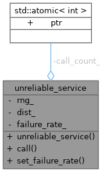

Collaboration diagram for unreliable_service:

Public Member Functions | |
| unreliable_service (double failure_rate) | |
| kcenon::common::Result< std::string > | call () |
| void | set_failure_rate (double rate) |
Private Attributes | |
| std::mt19937 | rng_ |
| std::uniform_real_distribution | dist_ |
| double | failure_rate_ |
| std::atomic< int > | call_count_ {0} |
Detailed Description
Definition at line 58 of file graceful_degradation_example.cpp.
Constructor & Destructor Documentation
◆ unreliable_service()
|
inlineexplicit |
Definition at line 66 of file graceful_degradation_example.cpp.
67 : rng_(std::random_device{}())
68 , dist_(0.0, 1.0)
69 , failure_rate_(failure_rate) {}
std::uniform_real_distribution dist_
Definition graceful_degradation_example.cpp:61
Member Function Documentation
◆ call()
|
inline |
Definition at line 71 of file graceful_degradation_example.cpp.
71 {
72 call_count_++;
73 std::this_thread::sleep_for(50ms);
74
76 return kcenon::common::Result<std::string>::err(
77 error_info{monitoring_error_code::service_unavailable,
79 );
80 }
81
82 return kcenon::common::ok(std::string("Service response: SUCCESS"));
83 }
std::atomic< int > call_count_
Definition graceful_degradation_example.cpp:63
common::error_info to_common_error() const
Convert to common_system error_info.
Definition result_types.h:64
Here is the call graph for this function:

Here is the caller graph for this function:

◆ set_failure_rate()
|
inline |
Definition at line 85 of file graceful_degradation_example.cpp.
Member Data Documentation
◆ call_count_
|
private |
Definition at line 63 of file graceful_degradation_example.cpp.
63{0};
◆ dist_
|
private |
Definition at line 61 of file graceful_degradation_example.cpp.
◆ failure_rate_
|
private |
Definition at line 62 of file graceful_degradation_example.cpp.
◆ rng_
|
private |
Definition at line 60 of file graceful_degradation_example.cpp.
The documentation for this class was generated from the following file:
- examples/graceful_degradation_example.cpp